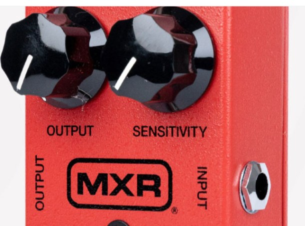
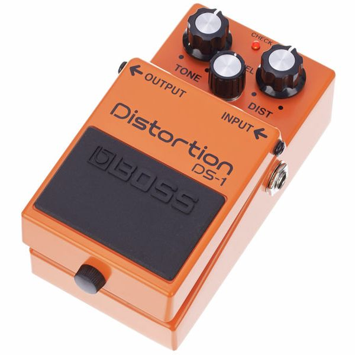
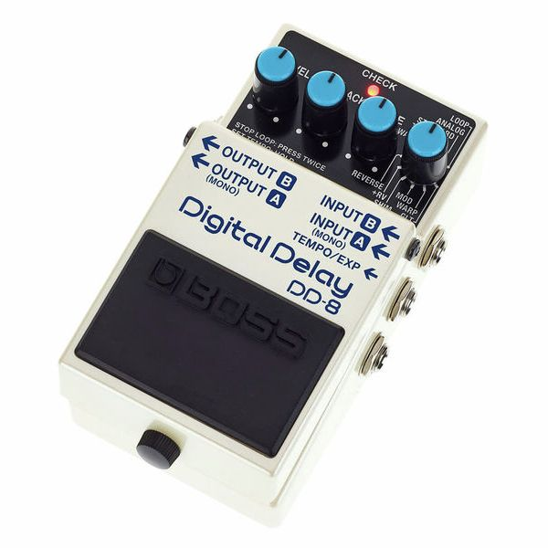

⚡ Le pedalboard minimum viable
- 🎚️ Boss TU-3 — accordeur. Le premier achat, toujours.
- 🗜️ MXR Dyna Comp — compresseur. La colle sonore.
- 💚 Ibanez TS9 — overdrive. La pédale culte.
- 🟠 Boss DS-1 — distorsion. L'orange qui pique.
- 🕐 Boss DD-8 — delay. L'écho de poche.
- 🏛️ Boss RV-6 — reverb. L'espace en boîte.
Tout guitariste a un jour ouvert un magasin de musique avec quatre-vingts euros en poche et zéro idée de quoi prendre. Tube Screamer ou DS-1 ? Boss DD-8 ou Strymon ? Compresseur, vraiment ? Il y a six familles d'effets fondatrices, et il existe pour chacune un modèle de référence — souvent abordable, toujours fiable.
Ce guide te donne la sélection canonique : six pédales qui couvrent 90 % des sons de la musique populaire des cinquante dernières années. Tu les branches dans l'ordre, tu apprends à les tourner, et tu joues. Le reste — fuzz, octaver, wah, modulations exotiques — viendra plus tard, quand tu sauras pourquoi tu en as besoin. Pour aller plus loin sur le choix, vois notre guide complet.
Le sextet de base

2008 · Tuner chromatique · La discipline
Boss TU-3
Boss / Roland
L'accordeur le plus vendu de l'histoire. 21 LED de précision, true bypass, mute silencieux quand tu changes de gratte sur scène. Pas glamour, mais le jour où tu joues désaccordé devant trente personnes, tu comprends pourquoi il est en première position de tous les pedalboards de la planète.
🎸 Qui l'a utilisée ?
John Mayer, Mark Tremonti, John Petrucci — et 95 % des guitaristes pros qui tournent. Quand Boss vend plus d'accordeurs en un an que les autres marques en cinq, ce n'est pas un hasard.

1972 · Compresseur · La colle sonore
MXR Dyna Comp
MXR / Dunlop
Deux boutons, un son immédiatement reconnaissable. La Dyna Comp resserre la dynamique, fait remonter le sustain et donne ce petit « pluck » funk-country qui sonne sur les notes piquées. C'est la pédale qui transforme un riff timide en groove qui claque.
🎸 Qui l'a utilisée ?
David Gilmour en a une depuis 1976 — c'est elle qui fait chanter les solos de Comfortably Numb. Nile Rodgers et la scène funk new-yorkaise l'ont adoptée pour ses « clucks » brillants.

1982 · Overdrive · La pédale culte
Ibanez TS9 Tube Screamer
Ibanez
La pédale d'overdrive la plus copiée au monde. Bosse les médiums vers 720 Hz, comprime gentiment les transitoires, et booste un ampli déjà saturé sans le rendre brouillon. Si tu ne devais garder qu'une seule pédale de saturation, ce serait celle-là.
🎸 Qui l'a utilisée ?
Stevie Ray Vaughan en collait une, deux ou trois en série pour pousser son Fender Vibroverb dans le rouge — la signature même de son son. John Mayer en utilise une version modifiée sur scène depuis quinze ans.

1978 · Distorsion · L'orange qui pique
Boss DS-1
Boss / Roland
La distorsion la plus vendue de tous les temps. Plus agressive que le Tube Screamer, plus tranchante dans les aigus, elle gratte là où l'overdrive caresse. Le boîtier orange a traversé quarante ans sans une ride — et reste vendu moins de soixante euros neuf.
🎸 Qui l'a utilisée ?
Kurt Cobain sur les premiers albums de Nirvana — la DS-1 fait partie du son Bleach. Steve Vai l'a longtemps embarquée comme pédale de boost solo, et Joe Satriani en a fait sa marque de fabrique sur Surfing With The Alien.

2019 · Delay numérique · L'écho de poche
Boss DD-8
Boss / Roland
Onze modes de delay dans un boîtier compact : analog, tape, modulated, reverse, shimmer, loop 40 secondes… La DD-8 fait le boulot de cinq pédales pour le prix d'une. Tap tempo intégré, true bypass, sortie stéréo.
🎸 Qui l'a utilisée ?
David Gilmour a toujours eu un delay au cœur de son son — c'est lui qui transforme un solo en cathédrale. Andy Summers de The Police a bâti tout un style de jeu sur des delays courts entrelacés, le « guitar weaving » à l'origine de Walking on the Moon.

2015 · Reverb numérique · L'espace en boîte
Boss RV-6
Boss / Roland
Huit modes de reverb dont une SHIMMER octaviée proprement vertigineuse et une +DELAY hybride redoutable pour les arpèges aériens. La RV-6 est l'une des rares reverbs sub-200 € qui ne sonnent pas en plastique — Boss a vraiment soigné les algorithmes.
🎸 Qui l'a utilisée ?
David Gilmour à nouveau — il ne joue jamais sans reverb. Kevin Shields de My Bloody Valentine et toute la scène shoegaze s'en servent comme d'un effet à part entière, pas d'un simple décor.